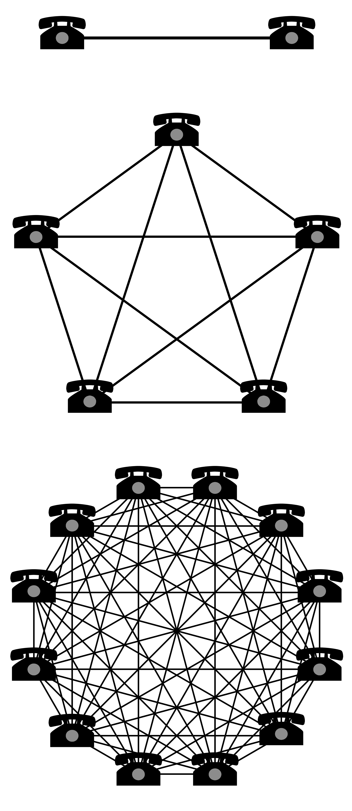

The Semantic Frontier
Going Where No SPARQL Endpoint has Gone Before
Wouter Beek (w.g.j.beek@vu.nl)
November 6th, 2017

What is the cost of access?

The cost of access is too high for scientists

ISWC research papers use 2 datasets on average.
You need a €100K+ something something cluster!
Scalability ‘solved’ in research
- Large-scale storage
- Large-scale querying
- Integration in business processes
- Large-scale reasoning
- Large-scale everything
Where are these services running today (free or paid)?
Allocative Efficiency
What the consumer is willing to pay should equal the marginal cost of production
Why is allocative efficiency not reached?
- Existing deployments are closed systems (no Metcalfe effect)
- Negative incentive model for data that is good & open
- Marginal cost of production goes up with № nodes
Negative incentive model

SPARQL endpoints are either valuable or available
Metcalfe's Law
The value of a network is proportional to the square of the number of connected nodes
№ Internet hosts

№ Internet [FILL-IN-THE-BLANK]

Our approach (180°)
Not a memory-based multi-node cluster
The cheapest thing in computing today: disk
€305,-

The cost of access (our approach)
- 1 file
- 28,362,198,927 unique triples
- >650K data documents
- 524 GB of disk space
- 15.7 GB of RAM
- €305,- hardware cost
LOD-a-lot

LOD-a-lot: Go Where No SPARQL Endpoint Has Gone Before
- Term enumerators
- Triple enumerators
- Triple pattern cardinalities
- Random triples from triple pattern
- Random terms (by position / by type)
- Exact prefix match
Example: Enumerating schema
comparisonEmpirical semantics
bbc:sameAs
bbc:sameAs
owl:sameAs
?
Example: Identity closure
558,943,116 owl:sameAs triples

Cleaning owl:sameAs
Community 1: Obama, the person
http://als.dbpedia.org/resource/Barack_Obama
http://am.dbpedia.org/resource/ባራክ_ኦባማ
http://data.nytimes.com/obama_barack_per
http://nl.dbpedia.org/resource/Barack_Obama
http://rdf.freebase.com/ns/m.02mjmr
http://viaf.org/viaf/52010985
http://yago-knowledge.org/resource/Barack_Obama
Community 2: Obama, the administration
http://dbpedia.org/resource/Administration_of_Barack_Obama
http://dbpedia.org/resource/Barack_Obama_Cabinet
http://dbpedia.org/resource/Barack_Obama_presidency
http://rdf.freebase.com/ns/m.05b6w1g
http://wikidata.dbpedia.org/resource/Q1379733
http://yago-knowledge.org/resource/Presidency_of_Barack_ObamaThank you!
Mail: w.g.j.beek@vu.nl
WWW: wouterbeek.com